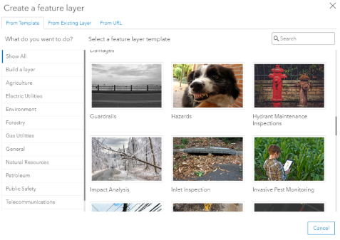
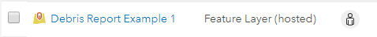
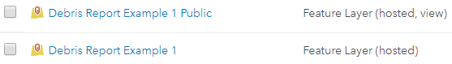
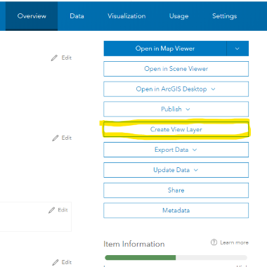
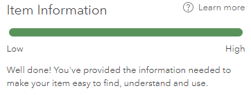
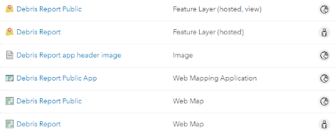

Lab Assignment 4
Use mobile GIS to edit a layer through a web service
Create an app that can be used on mobile devices to update a dataset through a web service. The dataset will be hosted with ArcGIS Online, and mobile devices will be able to add new records or update existing records. There will be two layers to accomplish this (pretend you are setting this up for an organization): one for private use within your organization and one for public use.
The example used in this tutorial is for an app to report debris on campus following a tornado. In this example scenario, campus authorities need to quickly deploy a system for identifying debris so maintenance crews can respond. The system is initially set up so that only these crews can make detailed reports, but given the urgency of the situation, a public app is also created to get basic input from anyone on campus who spots downed trees, damaged vehicles, etc.
We will use separate apps to update the private and public layers:
- For the private layer, you will use Collector for ArcGIS (iOS, Android, Windows) for internal reports.
- For the public layer, you will create a web app in ArcGIS Online for public, crowdsourced reports.
This tutorial requires an ArcGIS Online organizational account (paid subscription), provided by your instructor. Do not use your free public account.
https://lsuga.maps.arcgis.com/apps/GeoForm/index.html?appid=2a798f276b0f475aa1d430736eaa74af
Data
The dataset will at first be empty, and will only be populated once users start submitting reports through the private and public apps. To create this empty dataset, use the feature layer templates available in ArcGIS Online. This tutorial will use the “Debris Reports” template.

Feature layer templates will include predefined attributes. For example, the “Debris Reports” template will create a feature layer with the following attributes:
- Report ID
- Type of Debris
- Details
- Name
- Phone
- Estimated Volume (cubic yards)
- Estimated Weight (tons)
- Date Submitted
- Status
- Assigned To
- Photos and Files
Note: the attributes in your feature layer will depend on the template you choose.
You can come up with an idea for what you want your app to do by looking through these templates, e.g., report animal sightings, damage assessments, marking fire hydrants.
Creating a new feature layer will create a new item on your Content page. This layer can be added to maps.

For public access, we will create a “view” of the feature layer.

The new layer “view” is not a copy of the source layer. The view points back to the source layer. Therefore, updates to the data in one layer will be reflected in both the view and the source. The purpose is to be able to set different permissions, styles, and filters for the view and the source. In this tutorial, the source will be private and the view will be public:
- Feature layer: employees can add, update, and delete reports; public cannot access.
- Feature layer view: public can access but can only add new reports.
Process
The basic steps in this process are:
- Create an empty layer (for employees)
- Create a map (for employees)
- Set up ArcGIS Collector (for employees)
- Create a layer view (for public)
- Create a map (for public)
- Create an app (for public)
Create an empty layer
- Sign into your ArcGIS Online organizational account, provided in class by your instructor. This is not the same as your free public account.
- Go to your Content page.
- Click
Create>Feature Layer. - Choose a template and click
Create. - You will be prompted to define an “extent” for your dataset. Zoom the map to the area that you expect to be the boundary for potential data entries. In the example of reporting debris on campus, the map should be centered on campus but zoomed out enough to show the entire campus.
- After clicking
Nextthrough the steps, the layer will be created and you will see its Item Details page. - Click the
Datatab at the top of the page to see the predefined attributes (there are no features under the attribute yet). - Click
Visualizeto see the template’s predefined symbology. For the “Debris Reports” template, the symbols correspond to different types of debris (vegetation, hazardous material, etc.). The map should be blank except for the basemap. - Click
Settingsand note that theFeature Layer (hosted)section has options for editing. By default, anyone can add, update, and delete features in your layer if you share the layer with them, but by default the layer is not shared. Keep the default options. - Click
Overview, then clickOpen in Map Viewerto add the layer to a new map.Create a web map
- In the map viewer, the emtpy layer should appear in the
Contentpane with symbols already. The map should already be zoomed to extent you defined in Step 5. Savethe map. Do not share withEveryone, because this map contains the private layer for internal use.Set up ArcGIS Collector
- On a mobile device (iOS, Android, Windows), install Collector for ArcGIS (Esri) from your device’s app store.
- Once installed, sign into Collector with your ArcGIS Online organizational account.
- Browse for
Mapsin Collector to see the maps saved in your account that have an editable feature layer added. You should see the map saved in Step 12. Tap to open. - Depending on your version of Collector, tap
Collect,Capture, or+to add a new feature to the layer. Collector will try to use your current location, but you can tap the map to drop a point marker instead. - Fill out the relevant attributes, which will depend on the template you chose. Attach an image.
- After capturing the new feature, it should appear on your map
.Create a layer view for public access
- Return to the layer’s Item Details page.
-
Click
Create View Layerand give it a name and tags. 
Item Details page showing the Create View Layer button. -
Note that this creates another item in your Content:
Content page showing a separate item for a feature layer view. - Go to the view’s Item Details page and click
Settings. - Check
Enable editingand clickSave. You will then be able to set more specific permissions for editing.
Try it
- Think about how you want your public app to be used and set the appropriate editing permissions on the layer view.
- Only add new features?
- Only update existing features?
- Other combinations?
- Add the layer view to a new map. Set appropriate sharing permissions on the map.
- Add the map to an app. Set the same sharing permissions.
- Choose a configurable app meant for collecting and editing data. Consider which form fields need to be available for public input.
-
Fill out the item information on the Item Details page of your public app. Describe what the app is for and how the audience is supposed to use it.

A progress bar indicates how much information has been filled out on the Item Details page. - Once finished with the exercise, your Content page should show something like this:

Content page with items for private and public layers, private and public maps, a public app, and any supporting files you uploaded.
Submit
- The URL to the Item Details page of your public web app. Example:
https://www.arcgis.com/home/item.html?id=ABC123